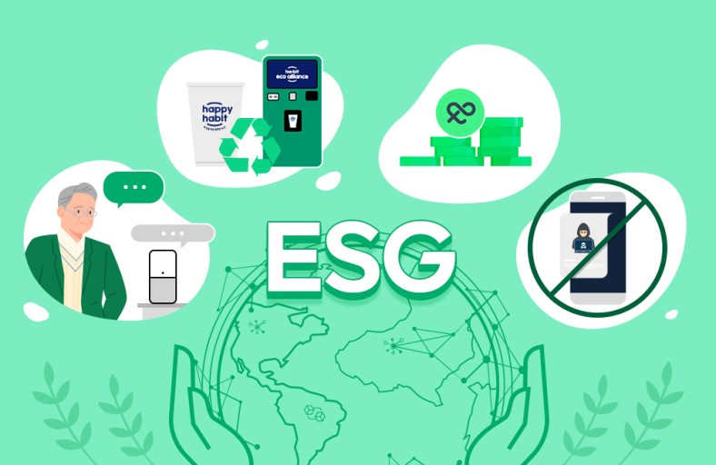

Environmental factors refer to an organization’s environmental impact(s) and risk management practices. These include direct and indirect greenhouse gas emissions, management’s stewardship over natural resources, and the firm’s overall resiliency against physical climate risks (like climate change, flooding, and fires).
Environmental criteria consider how a company safeguards the environment, including corporate policies addressing climate change, for example. Social criteria examine how it manages relationships with employees, suppliers, customers, and the communities where it operates. Governance deals with a company’s leadership, executive pay, audits, internal controls, and shareholder rights.